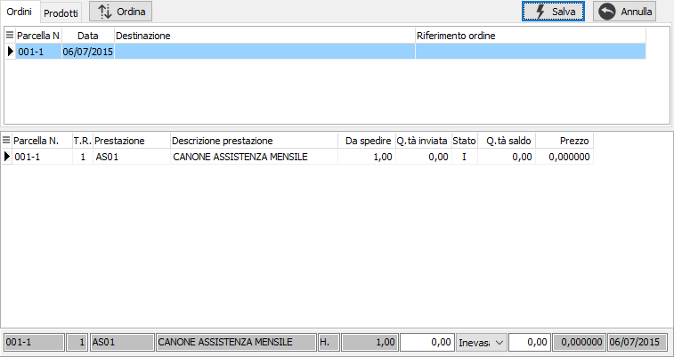
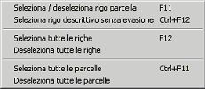

Evasione parcelle pro forma
L'evasione di parcelle pro forma da parte delle parcelle definitive ha come filtro sempre il codice del cliente.
Nel caso in cui esistano parcelle pro forma da evadere per il cliente viene richiamata la finestra di selezione.

La finestra è suddivisa in due sezioni.
Nella sezione superiore sono presenti i riferimenti alle parcelle pro forma da evadere che possono essere ordinati e visualizzati per numero o per prodotto. Selezionando un elemento in questa sezione, tramite il mouse o spostandosi con le frecce, nella parte sottostante vengono visualizzati i dettagli delle righe relative. Il pulsante Ordina, presente solo nella pagina Ordini, consente di modificare l'ordinamento crescente o decrescente dei dati della griglia superiore in base alla data del documento.
Nella sezione inferiore è possibile scegliere quali righe, e con quali quantità, inserire nel documento.
La selezione e l'annullamento della stessa può avvenire in diversi modi. Per selezionare oppure annullare la selezione di un rigo è sufficiente fare doppio clic con il mouse sul rigo interessato (se selezionato verrà

annullata la selezione altrimenti il contrario). È anche possibile utilizzare il menù indicato a lato (attivato tramite la pressione del tasto destro del mouse) oppure utilizzare gli appositi tasti funzione. È consentito selezionare o deselezionare un solo rigo, tutte le righe, un intera parcella oppure inserire manualmente la quantità nel pannello sottostante. È anche consentito selezionare righe descrittive senza che queste vengano evase al momento del salvataggio del documento.Se un rigo viene evaso completamente lo sfondo appare di colore giallo e nella colonna stato compare la lettera "E", se viene evaso parzialmente lo sfondo assume un colore giallo molto più chiaro e nella colonna stato appare la lettera "P", altrimenti lo sfondo rimane bianco e nella colonna stato è presente la lettera "I". È possibile anche indicare una quantità diversa da quella del rigo e cambiare manualmente lo stato del rigo tramite il combo presente nel pannello di inserimento dati. In questo caso se la quantità inserita è minore di quella da evadere viene richiesto se saldare il rigo altrimenti, se la quantità inserita è maggiore, viene saldato automaticamente per la differenza.
La pressione sul pulsante Esegui determina l'inserimento dei dati selezionati nel documento.